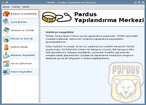
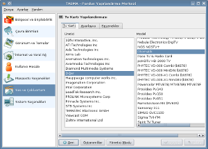

TASMA
TASMA
TASMA, ileride ÇOMAR altyapısını kullanacak grafik arayüzlü bir yapılandırma aracıdır. TASMA, KControl modüllerini kullanarak masaüstü olarak seçilen KDE ile bütünleşik çalışabilir.
TASMA, Pardus sistemini ihtyaç ve beğenilere göre düzeltmeyi sağlayan modüller ve modülleri yönetmek ve göstermek için bir altyapının bütünüdür.
Ekran Görüntüleri
|  |  |
Kodlar
Bu web sitesinde bulunan bilgi ve belgelerin, kaynak gösterilmek koşulu ile kullanılması serbesttir.
Pardus markası ve logotipi TÜBİTAK'ın tescilli markasıdır. Kullanım koşulları için Yasal Uyarı bölümünü inceleyiniz.
Bilgi ve önerileriniz için bilgi at pardus.org.tr
TÜBİTAK - UEKAE, PK.74 41470, Gebze / Kocaeli.